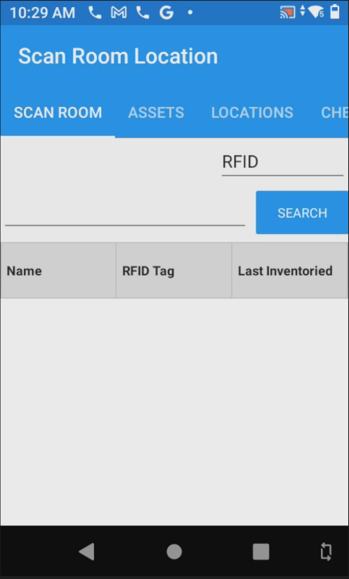
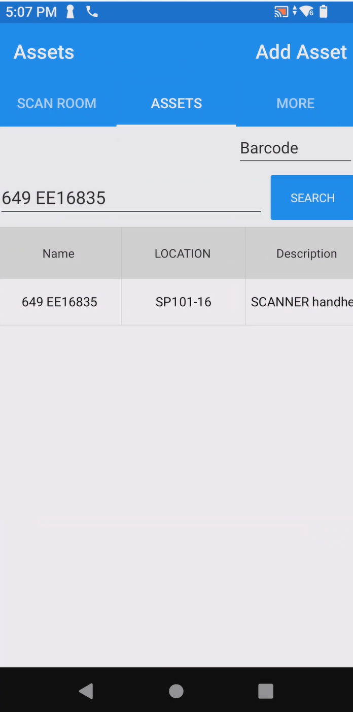
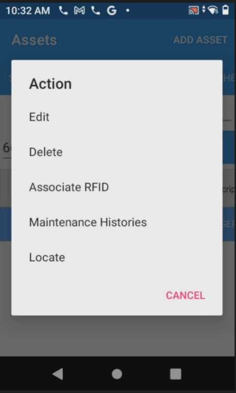
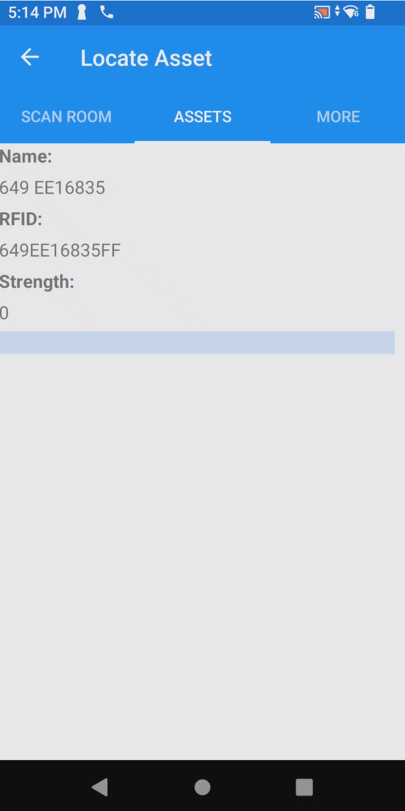
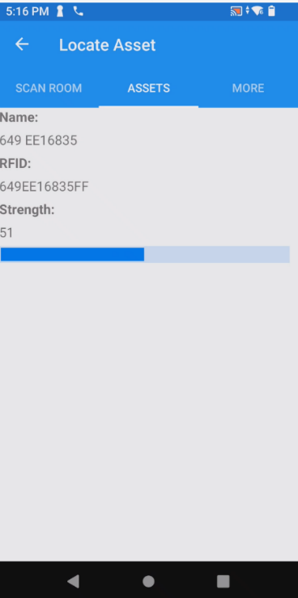
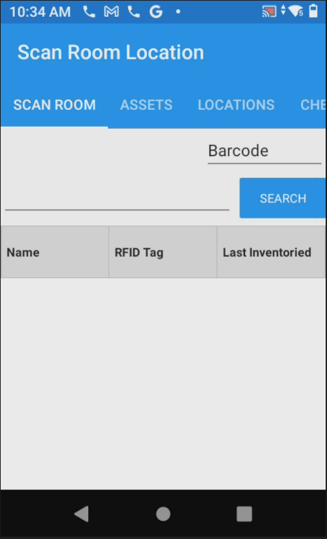
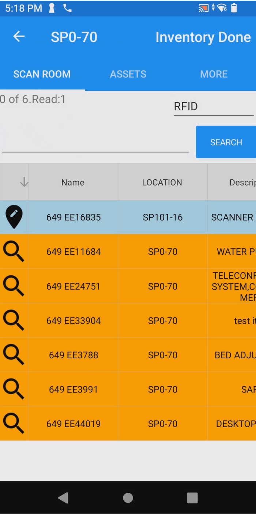
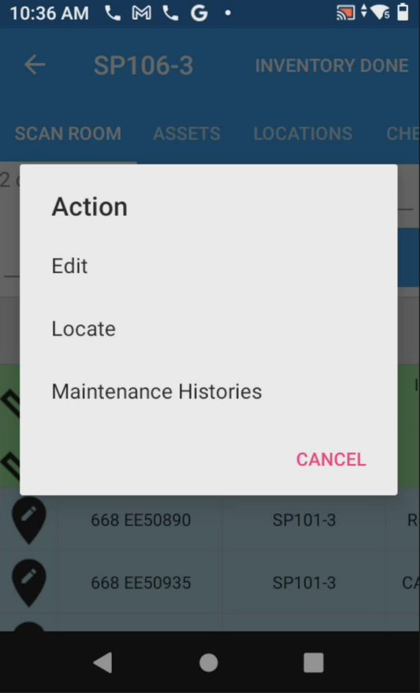
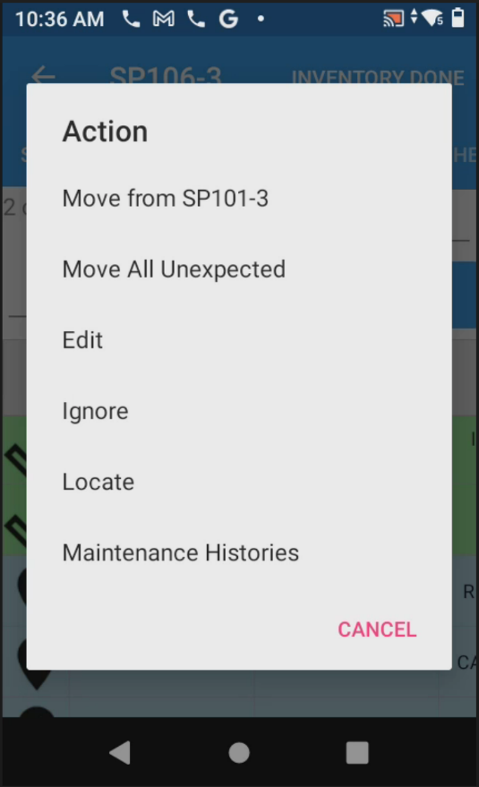

The Locate feature turns the Zebra Sled into an RFID Geiger counter — hold the
top trigger and walk toward the asset. A blue strength bar fills and beeping becomes higher-pitched as
you get closer, helping you pinpoint exactly where a tagged item is physically located.
ⓘ Equipment Required
Zebra TC53 mobile computer with Zebra Sled (RFID reader attachment) and the iDash app installed.
When you tap Locate on any asset and hold the top trigger on the Zebra Sled,
the app shows the Locate Asset screen with three pieces of information:
Field
What It Shows
Name
The asset name from iDash (e.g., 649 EE16835)
RFID
The RFID tag EPC code on the label
Strength
Signal strength 0–100. Higher = closer. The blue bar fills as you approach.
Signal Strength Reference
Far away
Strength ~0 — silent, bar empty
Getting closer
Strength ~40 — slow beeping
Very close
Strength ~80+ — rapid high-pitched beeping
Method 1 — Locate a Single Asset via Asset Search
Use this method when you know the asset’s EE# and want to find it directly without scanning a room first.
1
Open iDash and tap the ASSETS tab at the top of the screen.
This switches from Scan Room mode to the asset search screen.

Tap ASSETS tab at the top
2
Enter the EE# in the search box, beginning with your site number (e.g., 649 EE16835).
Tap Search. The matching asset will appear in the list below.

Type EE# → tap SEARCH
3
Tap the asset row in the results list to open the Action menu, then select Locate.

Tap Locate from the Action menu
4
Hold the top trigger on the Zebra Sled and walk through the area.
Watch the blue Strength bar and listen for beeping. Move toward the direction where the bar fills most — you are getting closer to the asset.

Strength 0 — asset not yet detected

Strength 51 — getting closer, beeping starts
✅ Found it! When the bar is nearly full and beeping is rapid and high-pitched, the asset is within a foot or two. Check behind equipment, under beds, or inside storage nearby.
Method 2 — Locate an Asset During Room Inventory
You can trigger Locate on any asset you encounter during a normal room scan — useful for tracking
down unexpected (blue) items or confirming where a missing (orange) item ended up.
1
Squeeze the bottom trigger on the Zebra Sled and scan the linear barcode location tag for the room.

Scan Room home — bottom trigger to scan location
2
Squeeze the top trigger and sweep the room to perform an RFID inventory scan.
When complete, tap the Name column header arrow to re-sort assets so scanned items rise to the top.

After scan — blue asset at top (unexpected, scanned), orange below (not found)
3
Tap the asset you want to locate. The Action menu will appear. Select Locate.

Action menu on a scanned (green) asset — select Locate

Action menu on an unexpected (blue) asset — also has Locate
ⓘ Locate works on any color. Green, orange, blue — you can tap Locate on any asset regardless of its scan status. It is not limited to unexpected items.
4
Hold the top trigger and walk the room. The strength bar fills and beeping intensifies as you close in on the asset.
Asset not in range. Move to a different area of the room.
1–30
Slow, low-pitched
Asset is in the general area. Keep scanning.
31–60
Moderate, medium-pitched
Getting warmer — narrow down the search zone.
61–90
Fast, higher-pitched
Very close. Check immediate surroundings carefully.
91–100
Rapid, high-pitched
Asset is within arm’s reach. Look precisely at that spot.
⚠ RFID signals can bounce. Metal surfaces and dense equipment can reflect RFID signals, causing false peaks. If the bar drops as you move closer, try approaching from a different angle or check behind/under nearby equipment.
💡 Tips & Notes
Always hold the top trigger continuously while locating — releasing it stops the RFID scan and the bar will freeze or reset.
Move slowly. RFID reads take a moment to register. Fast movement can cause the bar to lag behind your actual position.
Check above and below. Tags on equipment stored vertically (on shelves, under beds) still read — the signal passes through most non-metal materials.
Locate works offline. Because the locate function only needs the RFID tag EPC (downloaded during sync), it works even without an active internet connection.
After locating, you can tap the back arrow to return to your asset list and continue the inventory or choose another action (Move, Edit, etc.).